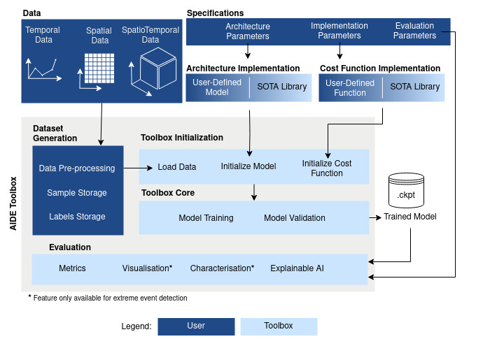

Welcome to AIDE’s Documentation!
Check out the Quick Start section for further information, including how to install the project.
About AIDE
Artificial Intelligence for Disentangling Extremes (AIDE) toolbox that allows for tackling generic problems of detection and impact assessment of events such as tropical cyclones and severe convective storms, heat waves, and droughts, as well as persistent winter extremes, among others. The open-source toolbox integrates advanced ML models, ranging in complexity, assumptions, and sophistication, and can yield spatio-temporal explicit output maps with probabilistic heatmap estimates. We included supervised and unsupervised algorithms, deterministic and probabilistic, convolutional and recurrent neural networks, and detection methods based on density estimation. The toolbox is intended for scientists, engineers, and students with basic knowledge of extreme events detection, outlier detection techniques, and Deep Learning (DL), as well as Python programming with basic packages (Numpy, Scikit-learn, Matplotlib) and DL packages (PyTorch, PyTorch Lightning).
{kind=link}
Citation
If you use this code for your research, please cite XAIDA4Detection: A Toolbox for the Detection and Characterization of Spatio-Temporal Extreme Events:
Gonzalez-Calabuig, M., Cortés-Andrés, J., Williams, T., Zhang, M., Pellicer-Valero, O.J., Fernández-Torres, M.Á., Camps-Valls, G.: The AIDE Toolbox: AI for Disentangling Extreme Events. IEEE Geoscience and Remote Sensing Magazine 12(3), 1–8 (2024). https://doi.org/10.1109/MGRS.2024.3382544